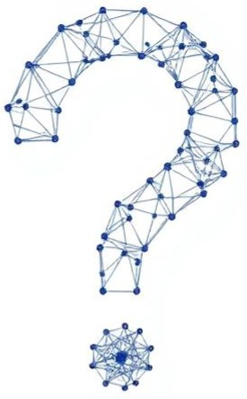
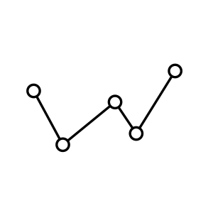

Your Enterprise Architecture Visible. Connected. Understood.

Waltz is the open source platform that turns fragmented architecture information into a living, connected map
of applications, data flows, people, capabilities and change initiatives.
It helps enterprise architecture, engineering, portfolio and risk teams answer critical questions with evidence instead of spreadsheets.
Enterprise teams need to make high-impact technology decisions quickly, but architecture data is often fragmented, hard to trust, and hard to connect across systems. Waltz addresses these core pains.
Critical architecture information lives in spreadsheets, disconnected tools, and tribal knowledge, making a reliable current-state view hard to maintain.
Answering simple questions about capabilities, applications, data flows, and ownership often requires stitching together evidence from many systems.
Regulatory and risk programmes like DORA, MiFID and Basel require accurate, explainable topology and lineage evidence, but many organisations struggle to produce it on demand.
Turn scattered architecture data into a shared operating model for change, governance and risk.
Open to the organisation, enriched by the people closest to the estate.
Generate application topology reports required for DORA, MiFID II, BCBS 239 and other regulatory programmes in minutes, not weeks.
Identify duplicated capabilities, legacy applications, and cost-saving consolidation opportunities across your entire estate.
Track critical data flows from source to consumer. Define golden sources and measure compliance against them.
Quickly understand the technology landscape of acquired entities. Model future-state architectures for major programmes.
Waltz is used by teams working through regulatory scope, application rationalisation, lineage and major transformation in complex enterprise environments.
This case study shows how Waltz helps organisations turn fragmented architecture and data lineage information into an auditable, decision-ready view. The result is faster regulatory response, clearer ownership, and stronger confidence in change programmes.
Waltz has been recognised by FINOS, covered by external industry publications, and discussed by contributors and adopters across the ecosystem.
Waltz received industry recognition through the OpenUK Finance Award, adding independent validation beyond the project itself.
FinTech Futures covered Deutsche Bank's decision to open source Waltz, helping position the project in a wider financial technology context.
The Stack highlighted Deutsche Bank's open source approach and the role Waltz plays in that broader enterprise engineering story.
Deutsche Bank's own announcement remains one of the clearest statements of why Waltz was opened up and where it was being applied.
NatWest publicly highlighted code contribution by its Markets teams to Waltz, providing a visible signal of adoption and participation beyond the original contributing organisation.
HMx Labs is actively engaged with Waltz, offering support, education, consultancy, and bespoke enhancements for enterprise needs.
For broader context, see the original FINOS introduction to Waltz and the FINOS write-up covering the Waltz team’s public project presentation.
Waltz is built in the open by practitioners across the enterprise architecture community. Whether you want to shape the roadmap, contribute code, or share how you use Waltz, you’re welcome.
Find working sessions and roadmap discussions in the FINOS calendar.

Explore the demonstration website with realistic sample data covering applications, ownership, flows, reporting and change views.